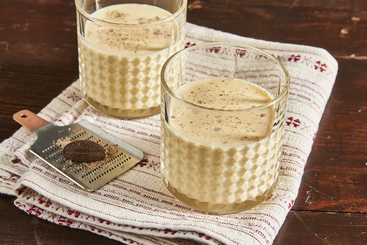

Eggnog

Eggnog
Easy to make Eggnog so you'll never need to buy from the
store again.
Ingredients
- 4 cups milk
- 1 teaspoon ground cinnamon
- 5 whole cloves
- 2 1/2 teaspoons vanilla extract, divided
- 12 large eggs
- 1 1/2 cups white suger
- 4 cups light cream
- 2 1/2 cups light rum (Optional)
- 1/2 teaspoon ground nutmeg
Steps
- Combine milk, cinnamon, 1/2 teaspoon vanilla, and cloves in a
saucepan over the lowest heat setting; stir and heat for 5 minutes.
Increase heat to medium-low and slowly bring to a boil. Remove from the heat.
- Whisk egg yolks in a large bowl until light yellow in color. Add sugar and
whisk until light and fluffy.
- Pour some of the hot milk mixture into the egg yolk mixture, whisking quickly
to avoid scrambling the eggs. Continue adding hot milk and whisking to combine
until all milk is incorporated.
- Pour the mixutre back into thee saucepan. Cook over medium heat. stirring constantly,
until thick, about 3 minutes; do not allow the mixture to boil. Strain to remove cloves
and let cool for about 1 hour.
- Stir in cream, rum, remaining 2 teaspoons vanilla, and nutmeg. Refrigerate begore serving,
8 hours to overnight.